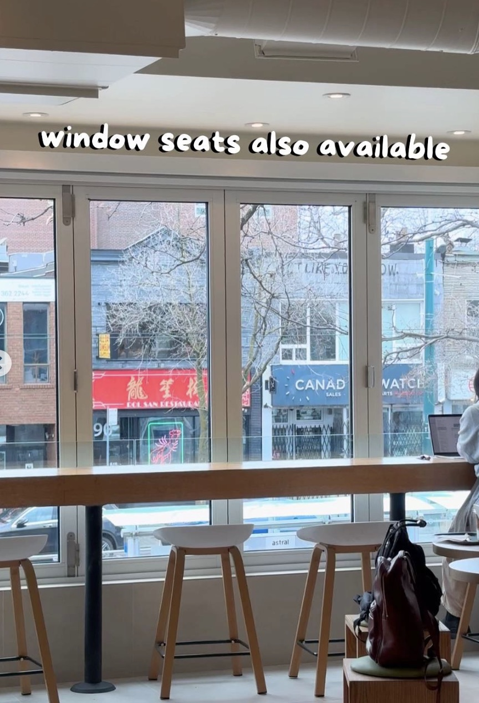
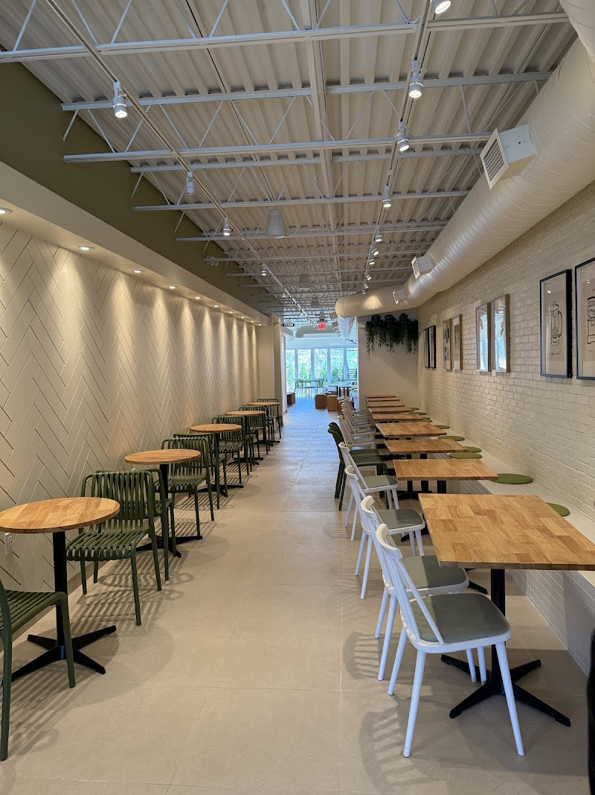
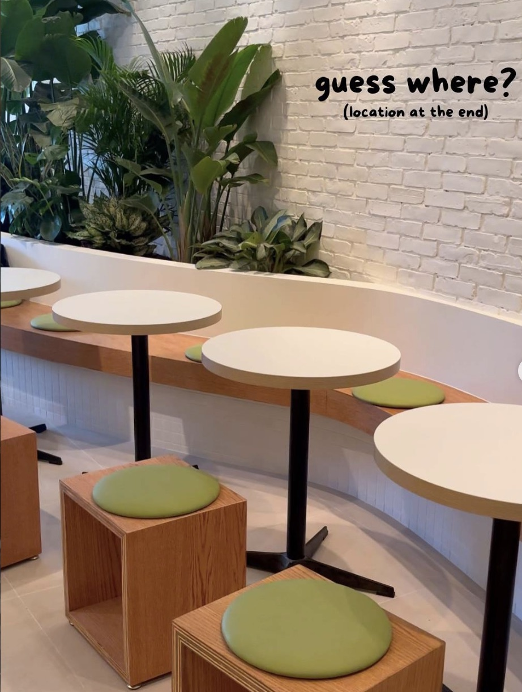

Project Seoul is a Korean-inspired café known for its creative desserts, specialty drinks, and visually striking presentation. The space combines café culture with a trendy, social atmosphere, making it a popular destination for people looking to try unique menu items and take photos. While it can be used for studying, it is primarily a social and experience-driven café.
2nd Floor, 355 Spadina Ave, Toronto, ON M5T 2G3
Open daily from 11am-10pm. It’s quiet when the place is open but it gets busy towards the afternoon.
There are outlets at some certain areas.
Wifi is available for customers when studying there.

Project Seoul offers a mix of seating that’s perfect for students to study at. It can also be short visits or group hangouts rather than work sessions.

It's like a bar seating but you get a window view. Best for solo or duo studying session.

Table is a lot bigger which there's more space to study. You can also sit with small group to have a study session. The seating is a bit more comfy to allow you to study longer.

Best for individual or duo study session. Seating can be uncomfortable after awhile sitting there and it can start feeling more cramp when it get more busy throughout the day.

Project Seoul is best known for its Korean-style desserts and specialty drinks, often designed with presentation in mind. The café focuses on creative and visually appealing items, which is a big part of its popularity.
Project Seoul has a trendy and modern interior that feels lively and visually engaging. The space is designed more for hanging out, taking photos, enjoying the experience, and a place to study at.
Often busy and active throughout the day.
Noticeable background music.
Personal Comment
Project Seoul is a fun and visually appealing café that’s perfect for trying unique desserts and drinks or spending time with friends. However, its can get busy and the social atmosphere makes it less suitable for studying, especially if you need a quiet environment. Project Seoul is kinda simliar to Cafe Foret where both cafe aesthetic are same using plants and seatings are simliar too. Project Seoul space is smaller which feels more cramp and can be hard to focus and study. It can also be hard to do a study session with your group of friends.